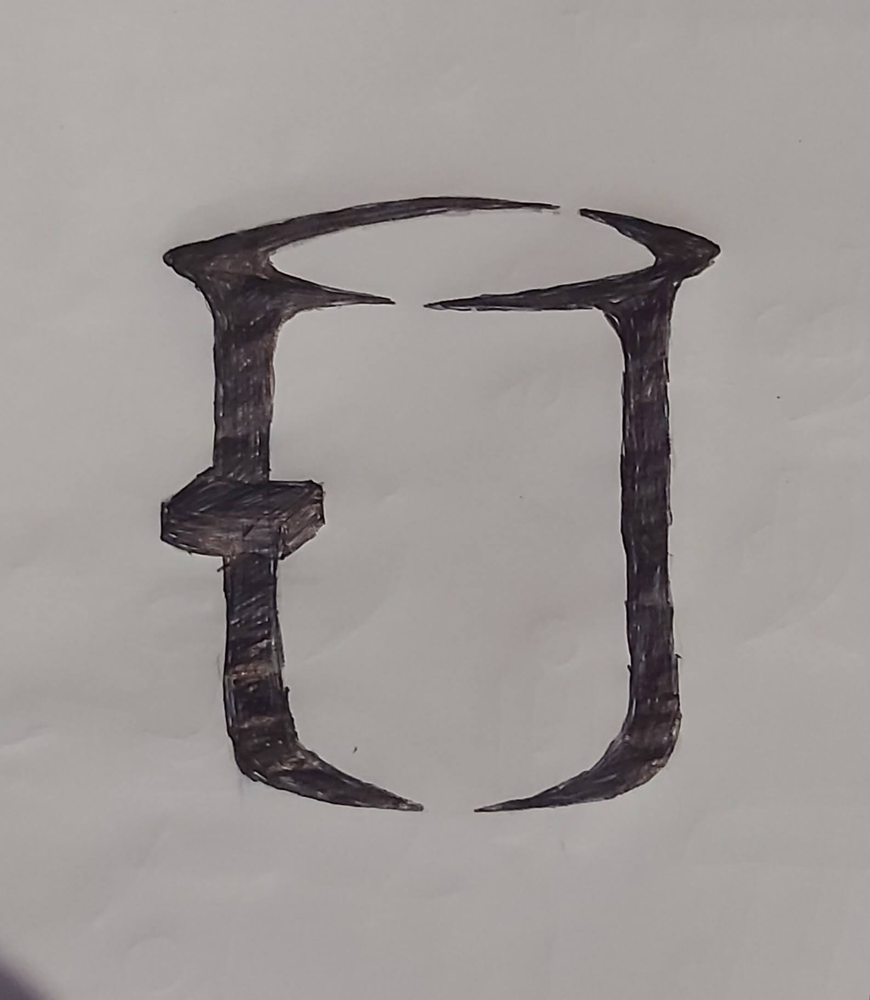
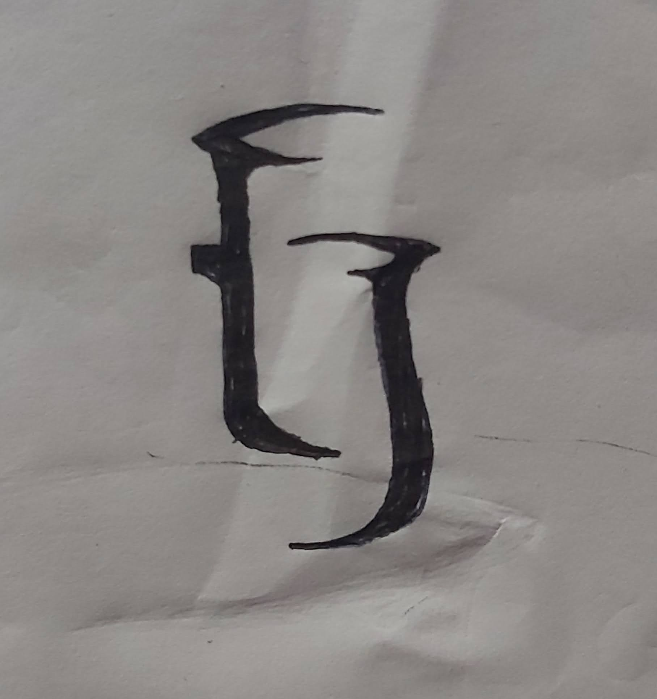

TJ Distributors, co-founded by Mr. Joseph Mathew and Mr. Tenson M Jacob,
marks a new chapter in the realm of distribution, specifically in the steel and aluminum utensils sector.
This venture, rooted in a rich heritage, commenced as a bold step by these two industry veterans. Both founders,
previously key figures at Anna Aluminium Company—a titan in aluminum utensil manufacturing—decided to embark
on their entrepreneurial journey after dedicating three decades to their former employer.
The company originated in Ernakulam, Kerala, with a modest customer base of just 10 businesses. Remarkably,
over the past two years, TJ Distributors has witnessed a meteoric rise, now proudly catering to over 500 small
businesses across the region. This growth trajectory not only reflects the founders' deep industry knowledge but
also their unwavering commitment to quality and service.
What sets TJ Distributors apart is its extensive product range, featuring over 200 brands from diverse regions
of India. This wide assortment underlines the company's dedication to offering variety and quality to its clientele.
As the son of Mr. Joseph Mathew, I have had the unique opportunity to witness and be a part of this entrepreneurial
success story, observing firsthand the resilience and strategic acumen that have been the cornerstone of TJ Distributors'
impressive expansion.
During my free time, I often engaged in small-scale branding projects for friends. Given my connection as Joseph's son, it was natural for me to be the go-to person for the branding of TJ
THE NAME
Coming up with 'TJ Distributors' was a piece of cake, honestly. It was one of those lazy, no-sweat tasks. I just had a quick look at what other similar businesses were named, and bam – 'TJ Distributors' was born before my coffee got cold. 'TJ'? That's just a chill nod to the first names of our laid-back founders, Mr. Tenson and Mr. Joseph. As for 'Distributors', well, it's just them being super straightforward about what they do.
THE LOGO
Crafting the logo for TJ Distributors was like stepping into the big leagues – my first high-visibility project and, yep, no pressure, but it's for my dad. So, here's how I roll with my branding magic:
First, I turn into a detective, gathering every snippet of info about the company, from the founders' breakfast choices to their grand vision.
Next, a chinwag with the big guns – do they have a style or color preference? Maybe a secret love for neon green?
Then, it's market study time – what's going to make our target audience's heads turn?
These steps? They're my treasure map for inspiration. And here's what my treasure hunt uncovered:
Armed with this "goldmine of info", the brainstorming began. My weapon of choice? Good ol' pen and paper for sketching out those initial bursts of genius. If a doodle catches my eye, it gets the VIP treatment – refined, polished, and transformed into digital art using Adobe Illustrator.
SOME INITIAL SKETCHES


AND THE FINAL DESIGN
SOME THOUGHTS BEHIND THE DESIGN
WEBSITE
Mr. Joseph and Mr. Tenson recently tasked me with creating a website to facilitate interactions with sellers in the northern part of India, primarily to overcome language barriers and introduce their company. Given the challenging timeline, I had only three days to deliver a solution, and this is the result. At present, I've halted further updates on this site due to other commitments and a lack of necessity at this point. However, I plan to return and overhaul the site as the business grows and, of course, if they are willing to compensate me for my services.
This project holds a special place in my journey as it represents many of my 'firsts.' It was my initial foray into branding, encompassing my very first logo design, and my debut in using Illustrator. Additionally, it was the first time I designed and developed a website from the ground up, among other milestones. While the outcomes may not be groundbreaking, the confidence I gained from this experience is immeasurable. I've dedicated a unique section in my portfolio to this project as a reminder of its significant role in encouraging me to venture beyond my comfort zone. I extend heartfelt gratitude to Mr. Joseph Mathew (my father) and Mr. Tenson for providing me with this opportunity. Although I recognize that financial constraints played a part in my selection, their trust in my abilities to deliver was invaluable.